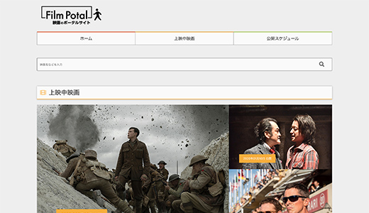
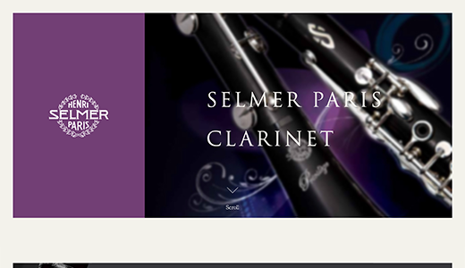
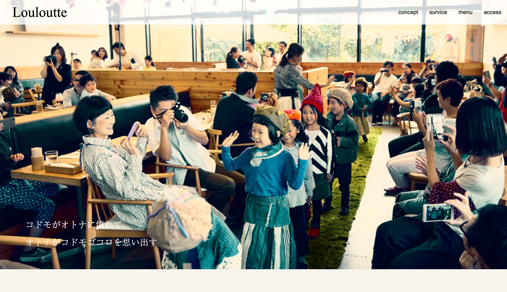
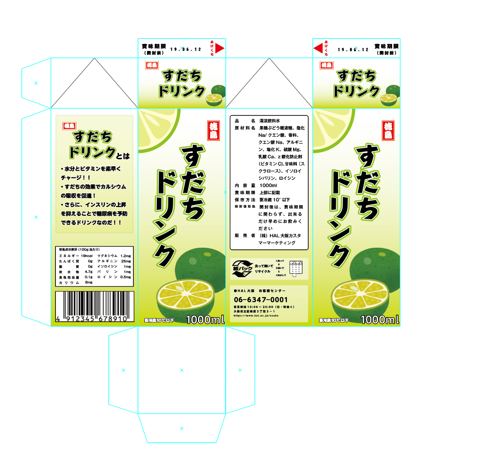
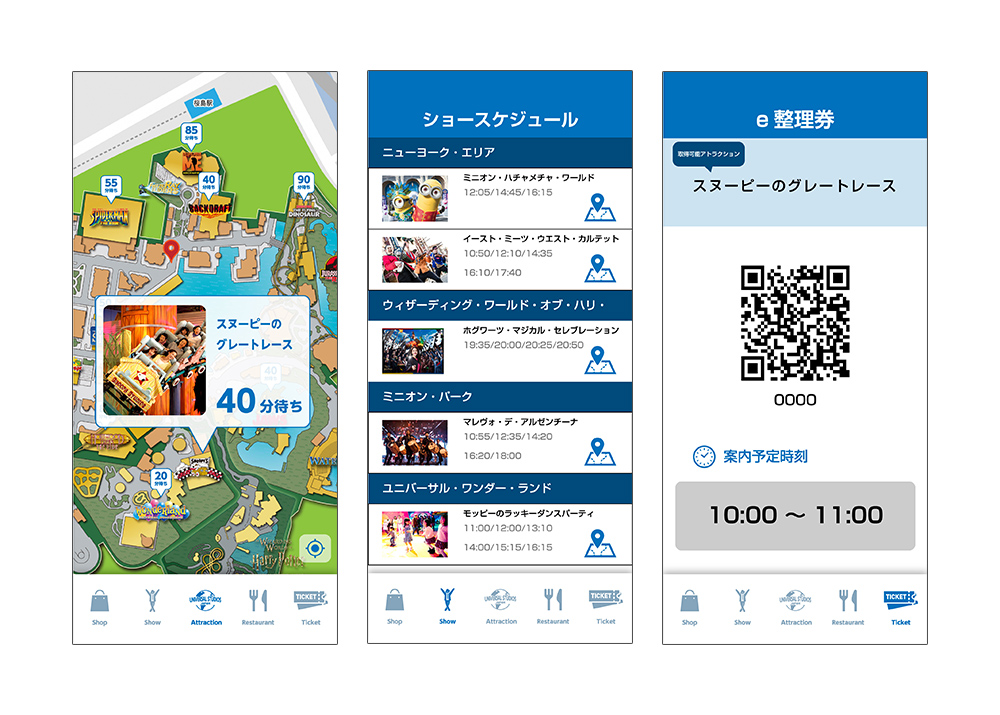
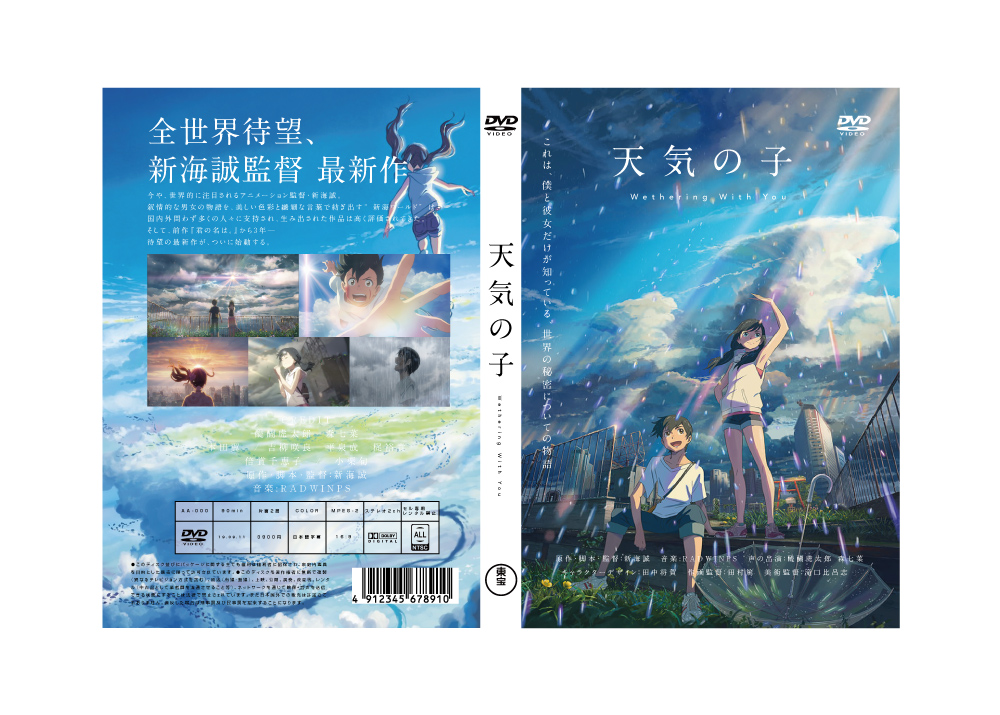
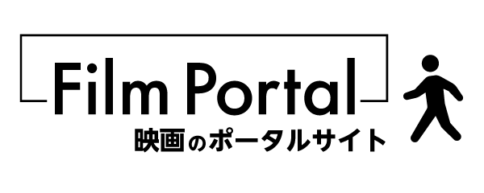

-
ゴールデンウィークの日記

作成時期:2019年5月ごろ
使用技術:HTML
Webの勉強を始めて、始めて作ったWEBサイトです。
ゴールデンウィークに体験した事を日記のようにHTMLで作りました。
何もわからない状態からのスタートだったのでHTMLの記述方法から学びました。
ゴールデンウィークの日記(PC用サイト)
-
映画の特設サイト

作成時期:2019年6月ごろ
使用技術:HTML
前回のゴールデンウィークのサイトから、複数ページの遷移やテーブルタグを用いた
レイアウトを学び制作しました。
映画の特設サイト(PC用サイト)
-
アーティストサイト

作成時期:2019年7〜8月ごろ
使用技術:HTML , CSS , jQuery
好きなアーティストを紹介するサイトをテーマ制作したサイトです。CSSを用いての初めてのWebサイ制作になりました。
また、授業ではまだ習っていなかったjQueryの使用を挑戦しました。自分で参考サイトで調べての実装するのに苦労しました。
アーティストサイト(PC用サイト)
-
アーティストサイトのリニューアル

作成時期:2019年9〜10月ごろ
使用技術:HTML , CSS , jQuery
前制作した、アーティストサイトのリニューアルをしました。テーマの色をモノクロに変更し、画像をホバーしたときにカラーに変える点にこだわりました。
前制作したものはwidthなどをピクセルでしていたためカラム落ちなどが発生していたためそこを修正するのに時間がかかりました。
アーティストサイトのリニューアル(PC用サイト)
-
美容室espaceのWebサイト

作成時期:2019年12月〜2020年1月ごろ
使用技術:HTML , CSS , jQuery
架空の美容室のWe制作を行いました。扱いたい情報やコンテンツを指定されそれを元制作するというものでした。
配布されたロゴの色をテーマカラーにして統一感を出し、paddingやmarginなど余白の使い方などにも気をつけました。
見出しと本文の対比をつけるために、文字のサイズや文字色などに違いをつけました。
リンクやボタンなどホバーアニメーションをつけることで、ユーザビリティの向上も意識してつくりました。
美容室espaceのWebサイト(PC用サイト)
-
映画の情報サイト

作成時期:2019年12月〜2020年1月ごろ
使用技術:HTML , CSS , JavaScript , jQuery , PHP , MySQL , Photoshop , Illustrator
映画の情報の追加編集ができるCMSサイトを制作しました。
データベースを使用しての初めてのサイト制作です。
編集する方が使いやすくなるようHTMLフォームを利用して
シンプルな操作性を意識しました。
-
楽器のキャンペーンサイト

作成時期:2020年6月ごろ
使用技術:HTML , CSS , JavaScript , jQuery , Photoshop , Illustrator
レスポンシブ対応のWebサイトを制作しました。
今まで制作したものとは違い、スマートフォン版のサイトから制作しました。
商品のイメージと合うように高級感のあるWebページを意識して制作しました。
楽器のキャンペーンサイト
-
レストランのWebサイト

作成時期:2020年8月ごろ
使用技術:HTML , CSS , JavaScript , jQuery , Photoshop , Illustrator
架空のレストランを題材に、Webサイトを制作しました。
この作品では、ペルソナ/シナリオ法を利用し、
実際に使用するユーザー像を考え制作しました。
レストランのWebサイト(PC用サイト)
-
牛乳パックのデザイン

作成時期:2019年7月ごろ
使用技術:Photoshop , Illustrator
Photoshop , Illustratorを用い制作しました。
ご当地のドリンクをグループで企画し、そこで話し合ったコンプセプトなどを元にデザインしました。
夏の暑い日に飲んでもらえるようにというコンセプトを元に、清涼感を感じさせる爽やかなグラデーションをつけました。
-
USJのアプリデザイン

作成時期:2019年8月ごろ
使用技術:Photoshop , Illustrator , AdobeXD
Photoshop , Illustratorを用いてアプリのデザイン制作しました。
アプリのデザインが初めてだったので実際の自分のスマートフォンにAdobeXDを用いてプレビューしなが制作しました。
プレビューしながらだったので、ボタンの押しやすさやテキストの大きさなどに気をつけなが制作しました。
-
DVDのパッケージデザイン

作成時期:2019年9月ごろ
使用技術:Photoshop , Illustrator
Photoshop , Illustratorを用いて自分の好きな映画のDVDのパッケージデザイン制作しました。
実際に発売されている他の作品のパッケージを参考に制作しました。コンテンツの配置や全体的な構成に気をつ制作しました。
-
映画の情報サイトのロゴ

作成時期:2019年12月ごろ
使用技術:Illustrator
映画の情報サイトを制作した際にオリジナルのロゴを制作しました。
映画館の入り口をイメージして制作しました。